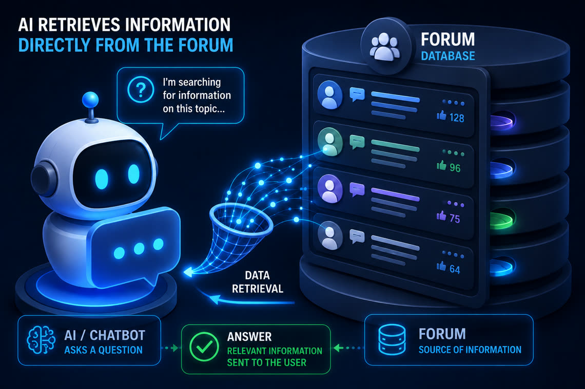

Wiring an AI chatbot into a forum:
web 1.0 as a knowledge base
Years of solved breakdowns, documented restorations and specialist answers — forums are gold mines of knowledge. But that knowledge sleeps in a format AI assistants ignore. A concrete field report: since summer 2026, on the website of a classic-car enthusiasts’ association built by NSY, the site’s mascot — a virtual "workshop foreman" — answers visitors using the community’s phpBB forum. Here is how, and above all with which guardrails.

The web 1.0 paradox
An enthusiast forum is the closest thing there is to a living knowledge base: questions are asked in users’ real words, answers come from people who have actually taken the engine apart, and every solved case stays archived. It is precisely what no language model can reproduce: those discussions are not in its training corpora, or only as fragments. Asked cold about a niche piece of classic mechanical engineering, an LLM does what it always does when it does not know: it improvises with confidence. Purists will object that a forum — content created by its members — technically belongs to the early participatory web, "2.0" before the term existed; "web 1.0" is used here as the shorthand everyone understands for that earlier web, server-rendered and proud of its pagination.
The classic reflex would be to modernise the forum or rewrite its content. Bad idea: the community lives there happily, and the value lies precisely in its history. The right question is: how do you make this untouched legacy the source of truth of a modern AI?
The architecture: a model that "knows" nothing — by design
The chatbot runs on RAG (retrieval-augmented generation): the language model has no knowledge of the site of its own. For every question, the server assembles a folder of facts, and the model is instructed to answer only from that folder. Three sources feed it:
- A written foundation — the association’s identity, the engine’s history, the vehicle files: stable facts, maintained like editorial content;
- The forum, live — the community’s topics and activity at the moment the question is asked;
- The shop, live — the products actually available, through the store’s API.
Why query the forum’s database directly
The chatbot does not "read" the forum’s pages: it queries its database directly, with targeted requests on phpBB’s tables. That choice is first a matter of performance: no HTTP round-trips, no HTML to parse — a few indexed queries running in milliseconds on the same hosting, where crawling pages would have added seconds to every answer. It then guarantees freshness: a topic posted a minute ago is already queryable, with no reindexing and no cache to invalidate. And it gives fine-grained control: you choose exactly which columns are exposed — titles, public forums, dates — and nothing else ever reaches the model.
Teaching the AI not to invent
Wiring the sources is not enough: the model must be taught to stick to the facts. Four rules, each born from an observed drift that was then corrected:
- Zero implicit knowledge. If the folder of facts does not contain the answer, the chatbot says so and points to the forum or the association — it never fills in with its "general culture", the primary reservoir of hallucinations.
- Quote topic titles word for word. A paraphrased title is an invented topic: the visitor will never find it. Titles surfaced from the database are rendered verbatim, with their link.
- Assume nothing about members. On the forum of an association devoted to one specific engine, not every member’s car has that engine — some members even run diesels while the club celebrates a petrol unit. The chatbot has learned not to "fix" reality to make it more consistent.
- Low temperature, short answers. The less the model is allowed to "create", the less it drifts; and a concise answer can be checked at a glance.
The guardrails: server-side, not just in the prompt
The most important lesson of these weeks of tuning: instructions given to the model are not guarantees. An economical model paraphrases, forgets, gets carried along by how a question is phrased. Every critical rule therefore exists twice: as a prompt instruction, and as a deterministic server-side mechanism that applies no matter what.
- Sensitive-content filtering. A car forum contains discussions about road-illegal tuning: those are excluded from answers server-side, silently — not merely "forbidden" to the model.
- Members’ privacy. The chatbot only shares what the site makes public about people: committee roles, nothing more.
- No external links, ever. The chatbot never points outside the site — URLs are checked and rewritten after generation if needed.
- A resilient fallback. If the model is unavailable, the real data — forum topics, shop products — keeps being served as-is, and the interface says so honestly.
- Regression tests against the real chatbot. Every rule has its automated test, run against the production chatbot: assertions check what it must say, and above all what it must never say. No deployment without a green suite.
When the chatbot becomes a forum member
The last step is the most unexpected: the mascot is not just an answer desk — it takes part. Forum registration validation is automated by a scheduled script, and it is its own member account that sends the welcome private messages and replies to new members’ introduction posts. One identity on both sides: ask the chatbot how registration works and it answers "I will send you a welcome message" — in the first person, because it is true.
What this project demonstrates
What holds for a phpBB forum holds for any documentary heritage: internal wikis, historical FAQs, ticket archives, business records. Three transferable lessons:
- Legacy content is an AI asset. No rebuild, no migration: RAG plugs into what is there, and querying the data directly makes it a fast, always-fresh source.
- No retraining. The knowledge stays in your data, under your control — the model learns nothing, it consults. The day a fact changes, the answer changes.
- Trust comes from the guardrails. What separates a gadget from a tool the association publicly stands behind is not the model’s capabilities: it is the taught rules, the server-side protections and the tests that lock them in.
This setup runs in production today, day in day out, for the association and its community. Documentary heritage to put to work, a chatbot to ground in your data? That is the heart of our AI-powered website creation offering — let’s talk, answer within 48 business hours.